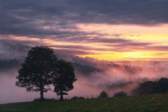
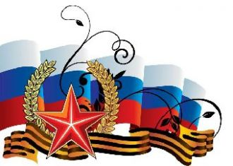

Your on the telephoneTelling me that she's goneNow we've been down this road a million times before
Быть моряком – стезя такая!Вам – благодарность и почет!По венам вашим соль морскаяИ доблесть прадедов течет!
We sign our cards and letters BFFYou've got a million ways to make me laughYou're lookin' out for me; you've got my backIt's so good to have you around
Я в платье белом бегу,Устала, но я смогу,Я просто очень хочу к тебе. Я оставляла следыУ берега, у воды. Я знаю, буду идти к тебе.
I don't know where to find youI don't know how to reach youI hear your voice in the windI feel you under my skinWithin my heart and my soul
My girl is the kinda person everyone likesShe can fix up or just hang with the guysCould be the pretty girl that you see at the mall
Είχες μια καρδιά να ζει για σέναΦταίω που πίστεψα εσένα ξανάΕίχες τα φτερά μου τσακισμέναΌνειρα φυλακισμένα καλά
Τι έπαθα ξαφνικά έχω αρρωστήσειΣε είδα με μια μάτια και έχω ποιά κολλήσειΣε βλέπω και φαντάζομαι στα χείλη σου να λιώνω
Пусть будут яркими дороги,Которые нам предстоит пройти.Пусть не встречаются тревогиНа нашем жизненном пути.
Купола золотые устремились в высокое небо,Колокольня Ивана Великого царствует важно,Вырастают зубцами крепостные могучие стены,
Платон сказал: первичен мир идей,В них - знание, а прочее - лишь мненья,Что обольщают мир неясной теньюВ привычной перемене дольних дней.
Не говори, что это сон. Все сны закончились давно. Все сны закончились давно. А я смотрю в твои глаза,Они как звезды за окном.

Поздравляю тебя в славный день февраля,Мой отважный защитник Отчизны.Знай, гордится тобою родная земля,Труд геройский твой ценен и признан.
Things haven't been the sameSince you came into my lifeYou found a way to touch my soulAnd I'm never, ever, ever gonna let it go
[Bridge:]
Иногда все расстояния сильнее, чем любовь.И тогда одно желание - к тебе вернуться вновь.Дождём весенним в самом белом феврале
А я уже давно потерял счёт дням -Сколько их прошло уже не знаю и сам.И почти не жду, что найду ответ -Ты была реальна или это мой бред?
Разгорелась ночка ярко. За зарницею зарница. От чего сердечку жарко. От чего душа томится? Будто споря с тишиною.
В один простой ноябрьский день,Десятого числа,Средь новорожденных детейВ наш мир пришла звезда.
Sono umane situazioniquei momenti fra di noii distacchi e i ritornida capirci niente poigià... come vedisto pensando a te...
Getting born in the state of MississippiPapa was a copperAnd Mama was a hippie